Next: Symmetric Eigenproblems
Up: Generalized Orthogonal Factorizations and
Previous: Generalized QR Factorization
Contents
Index
The generalized RQ (GRQ) factorization of an m-by-n matrix A and
a p-by-n matrix B is given by the pair of factorizations
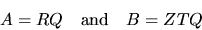
where Q and Z are respectively n-by-n and p-by-p orthogonal
matrices (or unitary matrices if A and B are complex).
R has the form
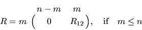
or
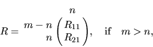
where R12 or R21 is upper triangular. T has the form
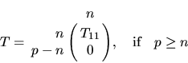
or
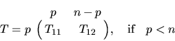
where T11 is upper triangular.
Note that if B is square and nonsingular, the GRQ factorization of
A and B implicitly gives the RQ factorization of the matrix AB-1:
A B-1 = ( R T-1 ) ZT
without explicitly computing the matrix inverse B-1 or the product
AB-1.
The routine xGGRQF computes the GRQ factorization
by first computing the RQ factorization of A and then
the QR factorization of BQT.
The orthogonal (or unitary) matrices Q and Z
can either be formed explicitly or
just used to multiply another given matrix in the same way as the
orthogonal (or unitary) matrix
in the RQ factorization
(see section 2.4.2).
The GRQ factorization can be used to solve the linear
equality-constrained least squares problem (LSE) (see (2.2) and
[55, page 567]).
We use the GRQ factorization of B and A (note that B and A have
swapped roles), written as
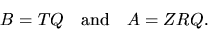
We write the linear equality constraints Bx = d as:
T Q x = d
which we partition as:
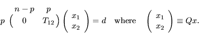
Therefore x2 is the solution of the upper triangular system
T12 x2 = d
Furthermore,
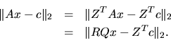
We partition this expression as:
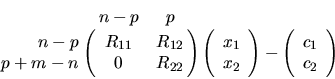
where
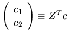,
which
can be computed by xORMQR (or xUNMQR).
To solve the LSE problem, we set
R11 x1 + R12 x2 - c1 = 0
which gives x1 as the solution of the upper triangular system
R11 x1 = c1 - R12 x2.
Finally, the desired solution is given by
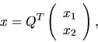
which can be computed
by xORMRQ (or xUNMRQ).
Next: Symmetric Eigenproblems
Up: Generalized Orthogonal Factorizations and
Previous: Generalized QR Factorization
Contents
Index
Susan Blackford
1999-10-01